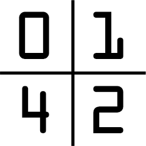
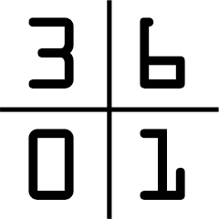
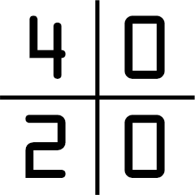
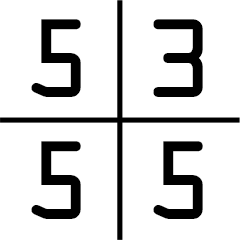
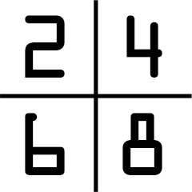
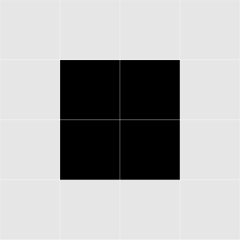
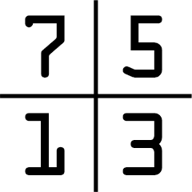
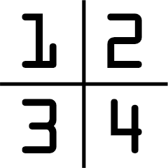
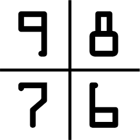

À propos du Pictionary
« Comment ça tu ne le vois pas ?! C'est évident ! »
Le module Pictionary est divisé en deux parties majeures :
- L'écran : Il s'agit d'une grille de 4 par 4 pixels blancs et noirs.
- Le clavier : À utiliser pour entrer le code.
Images
Chaque coin de l'écran de 2 par 2 pixels aura une partie de l'une des images ci-dessous. Comparer ce coin avec le même coin de chaque image jusqu'à trouver une similarité. Une fois la similarité trouvée, utiliser le chiffre situé au même emplacement dans la grille de chiffres à droite de l'image pour obtenir une partie du code.
|  |  | ||
 |
 |  | |
|  |  |  | |
|  |  |